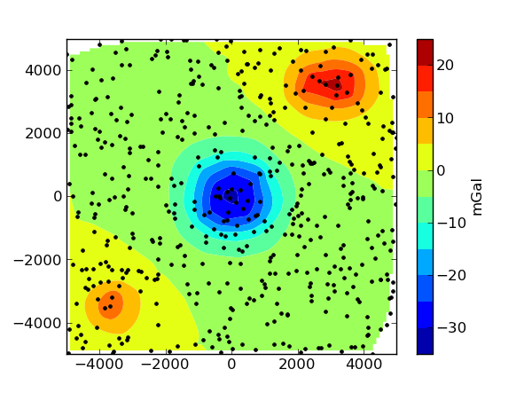

Fatiando a Terra: Geophysical modeling and inversion¶
An open source toolkit for geophysical modeling and inversion
Fatiando provides an easy and flexible way to perform common tasks like: generating synthetic data, forward modeling, inversion, 3D visualization, and more! All from inside the powerful Python language.
For more information visit the official site.
The source code of Fatiando is hosted on GitHub.
License: Fatiando is licensed under the BSD license. This means that it can be reused and remixed with few restrictions. See the license text for more information.
The best place to start learning about Fatiando is the Cookbook! There, you’ll find many sample scripts with common tasks that can help you get started.
As an example, this is how easy it is to create synthetic noise-corrupted gravity data on random points from a 3D prism model:
>>> from fatiando.mesher import Prism
>>> from fatiando.vis import mpl
>>> from fatiando import gridder, utils, gravmag
>>> # Create the prism model
>>> prisms = [
... Prism(-4000, -3000, -4000, -3000, 0, 2000, {'density':1000}),
... Prism(-1000, 1000, -1000, 1000, 0, 2000, {'density':-1000}),
... Prism(2000, 4000, 3000, 4000, 0, 2000, {'density':1000})]
>>> # Generate 500 random observation points at 100m height
>>> xp, yp, zp = gridder.scatter((-5000, 5000, -5000, 5000), 500, z=-100)
>>> # Calculate their gravitational effect and contaminate it with 0.1 mGal
>>> # gaussian noise
>>> gz = utils.contaminate(gravmag.prism.gz(xp, yp, zp, prisms), 0.1)
>>> # Plot the result
>>> mpl.contourf(xp, yp, gz, (100, 100), 12, interp=True)
>>> cb = mpl.colorbar()
>>> cb.set_label('mGal')
>>> mpl.plot(xp, yp, '.k')
>>> mpl.show()
which results in something like this:
{kind=link}
For those of you not so interested in potential fields, there is a new module fatiando.seismic.wavefd for 2D finite difference simulations of seismic waves!